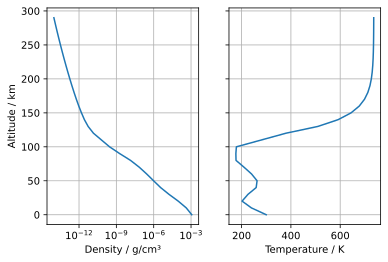
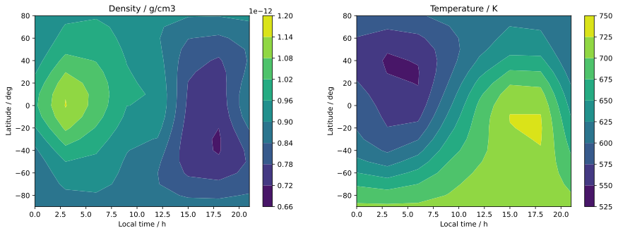

Python example¶
How to load the model¶
[1]:
import swami # SWAMI library
import numpy as np
import matplotlib.pyplot as plt
[2]:
mcm = swami.MCM()
Single point¶
[3]:
out = mcm.run(
altitude=100,
latitude=3,
longitude=15,
local_time=12,
day_of_year=53,
f107=70,
f107m=69,
kp1=1,
kp2=1,
get_winds=True,
get_uncertainty=True
)
print(f"Results are {out}\n")
print(f"Density is {out.dens:.3e} g/cm3")
print(f"Temperature is {out.temp:.2f} K")
Results are MCMOutput(dens=2.829354049223008e-10, temp=178.8555615350168, wmm=None, d_H=None, d_He=None, d_O=None, d_N2=None, d_O2=None, d_N=None, tinf=None, dens_unc=None, dens_std=1.749150709600944e-11, temp_std=9.60724715517875, xwind=nan, ywind=nan, xwind_std=28.02476670220009, ywind_std=21.61078819732512, alti=100.0, lati=3.0, longi=15.0, loct=12.0, doy=53.0, f107=70.0, f107m=69.0, kp1=1.0, kp2=1.0)
Density is 2.829e-10 g/cm3
Temperature is 178.86 K
Altitude profile: temperature and density¶
[4]:
altitudes = np.arange(0.0, 300, 10)
temp = []
dens = []
for h in altitudes:
out = mcm.run(
altitude=h,
latitude=3,
longitude=15,
local_time=12,
day_of_year=53,
f107=70,
f107m=69,
kp1=1,
kp2=1,
)
dens.append(out.dens)
temp.append(out.temp)
[5]:
f, ax = plt.subplots(1, 2, sharey=True)
ax[0].plot(dens, altitudes)
ax[0].set_xscale("log")
ax[0].set_xlabel("Density / g/cm³")
ax[0].set_ylabel("Altitude / km")
ax[1].plot(temp, altitudes)
ax[1].set_xlabel("Temperature / K")
ax[0].grid(True)
ax[1].grid(True)

Map at altitude: temperature and density¶
[6]:
lati = np.arange(-90, 90, 10)
loct = np.arange(0, 24, 3)
temp = np.zeros((len(lati), len(loct)))
dens = np.zeros((len(lati), len(loct)))
for i, lat in enumerate(lati):
for j, lt in enumerate(loct):
out = mcm.run(
altitude=160,
latitude=lat,
longitude=15,
local_time=lt,
day_of_year=53,
f107=70,
f107m=69,
kp1=1,
kp2=1,
)
dens[i,j] = out.dens
temp[i,j] = out.temp
[7]:
f, ax = plt.subplots(1, 2, figsize=(15, 5))
lt, la = np.meshgrid(loct, lati)
c = ax[0].contourf(lt, la, dens)
f.colorbar(c, ax=ax[0])
ax[0].set_title("Density / g/cm3")
ax[0].set_ylabel("Latitude / deg")
ax[0].set_xlabel("Local time / h")
c = ax[1].contourf(lt, la, temp)
f.colorbar(c, ax=ax[1])
ax[1].set_title("Temperature / K")
ax[1].set_ylabel("Latitude / deg")
ax[1].set_xlabel("Local time / h")
[7]:
Text(0.5, 0, 'Local time / h')

[8]:
lati = np.arange(-90, 90, 10)
loct = np.arange(0, 24, 3)
xwind = np.zeros((len(lati), len(loct)))
ywind = np.zeros((len(lati), len(loct)))
for i, lat in enumerate(lati):
for j, lt in enumerate(loct):
out = mcm.run(
altitude=80,
latitude=lat,
longitude=15,
local_time=lt,
day_of_year=53,
f107=70,
f107m=69,
kp1=1,
kp2=1,
get_winds=True
)
xwind[i,j] = out.xwind
ywind[i,j] = out.ywind
[9]:
f, ax = plt.subplots(1, 2, figsize=(15, 5))
lt, la = np.meshgrid(loct, lati)
c = ax[0].contourf(lt, la, xwind)
f.colorbar(c, ax=ax[0])
ax[0].set_title("Zonal wind / m/s")
ax[0].set_ylabel("Latitude / deg")
ax[0].set_xlabel("Local time / h")
c = ax[1].contourf(lt, la, ywind)
f.colorbar(c, ax=ax[1])
ax[1].set_title("Meridional wind / m/s")
ax[1].set_ylabel("Latitude / deg")
ax[1].set_xlabel("Local time / h")
[9]:
Text(0.5, 0, 'Local time / h')

[ ]: